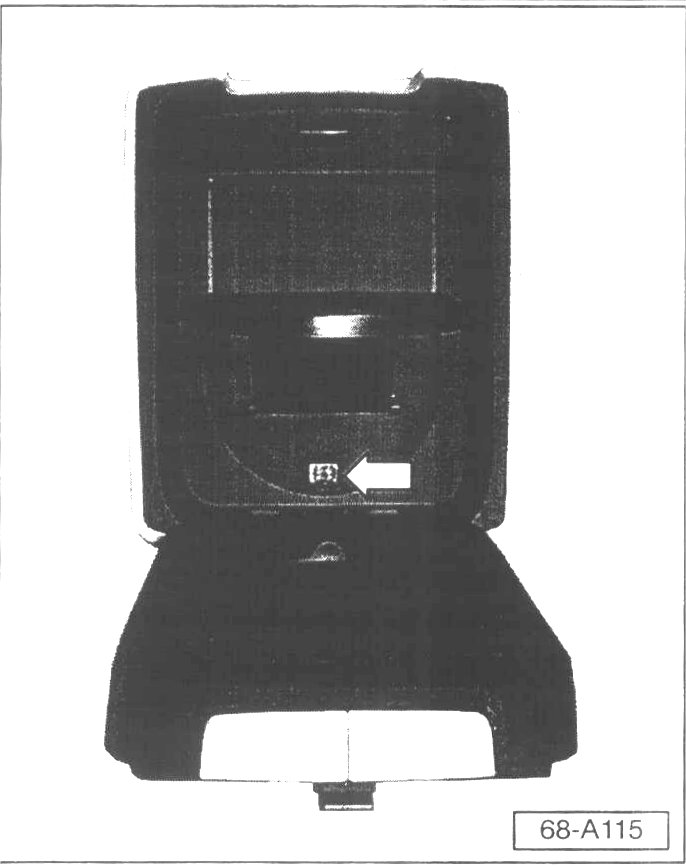
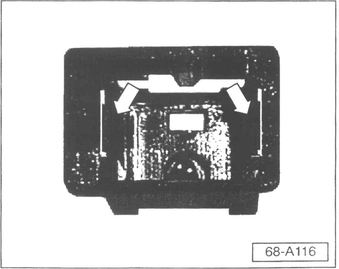

Interior - Front Arm Rest Cupholder Won't Stay Closed
Group: 68Number: 03-03
Date: Sept. 17, 2003
Subject:
Front Armrest Cupholder, Latch Mechanism Inoperative
Model(s):
Touareg 2004
Condition

- Front armrest cupholder latch mechanism (arrow) is broken, cup holder will not stay latched in the closed position.
CAUTION!
Part numbers are for reference only. Always check with your Parts Dept. for the latest parts information.
Service
DO NOT replace armrest for this condition.
Latch mechanism can be replaced as follows:

- Insert small screwdriver or small pick tool (with a hook at the end) behind locking tabs (arrows) of cupholder latch mechanism.
- Pry tabs inward and snap away from latch mechanism.
- Using the hooked pick tool pull mechanism out of armrest.
- Install new latch mechanism Part No: 7L6 858 581 into armrest.